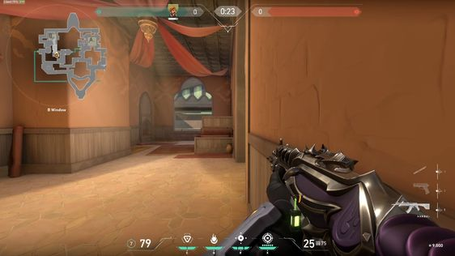

The term "____- person shooter" essentially describes the game's viewpoint.
What is a FIRST-PERSON SHOOTER game?
Action video games in the first-person shooter (FPS) genre are played from the viewpoint of the main character. FPS games frequently simulate an actual player's motions and give a glimpse of what they would see and do in-game.
FOR EXAMPLE:
Valorant
Apex Legends
Overwatch
Call of Duty

What is a THIRD-PERSON SHOOTER game?
As opposed to managing the game from your character's point of view, third-person shooter games let you watch your character from the perspective of an observer. Usually, you have an over-the-shoulder or behind-the-back view of your character.
FOR EXAMPLE:
Fortnite
The Division 2
Mafia 2
Grand Theft Auto (GTA)
Fallout
Where can they be played?
Several of them can be played on a variety of platforms, including computers, game consoles, and portable electronics.